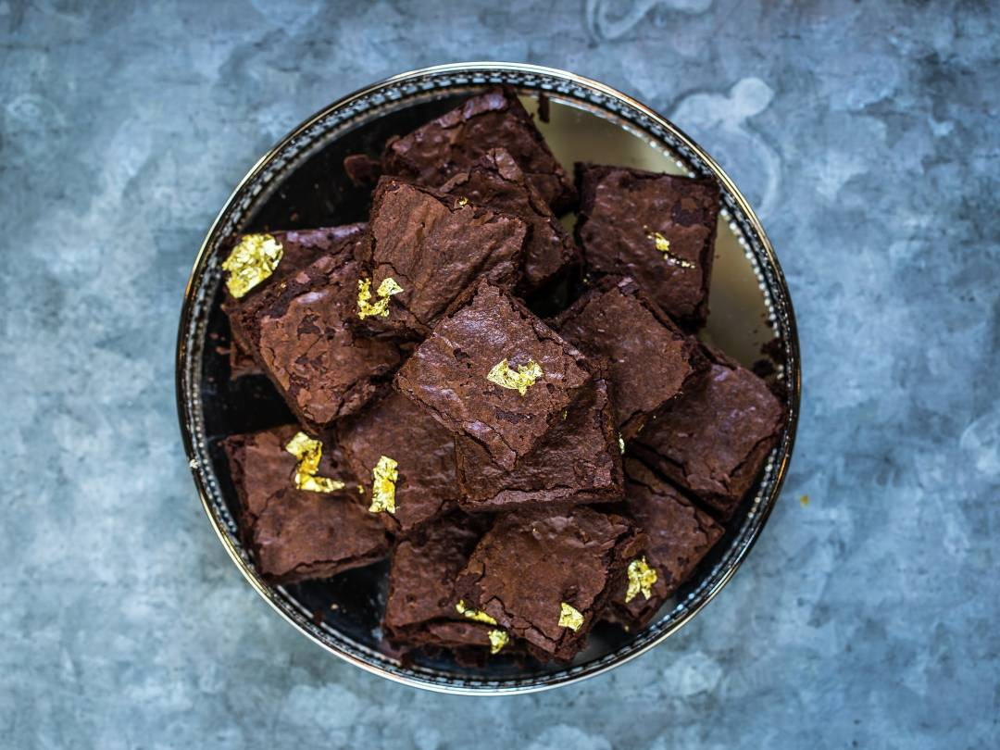

Gordon Ramsay

Spoil yourself with the world's best brownies!
A recipe from the Bread Street Kitchen and Royal Doulton collection.
Source
Makes 15-20 brownies
- 245g dark chocolate, broken into squares or roughly chopped
- 200g butter, diced, plus extra for greasing
- 175g caster sugar
- 125g light soft brown sugar
- 4 large eggs, lightly beaten
- 2 tsp vanilla extract
- 115g plain flour
- Pinch of sea salt
- 100g dark chocolate, chopped into small chunks (optional)
- Preheat the oven to 180°C/160°C fan/Gas 4. Grease and line a 30 x 23cm
cake tin with baking parchment.
- Put the chocolate and butter into a large heatproof bowl set over a pan
of gently simmering water (don't let the bottom of the bowl touch the
water underneath) and leave until melted, stirring occasionally (see Tips)
- Remove from the heat and cool the chocolate down by whisking in the
sugars using a balloon whisk. Add the eggs and vanilla extract and mix
in with a wooden spoon until combined. Sift over the flour and salt and
stir again until smooth and combined. Pour into the prepared tin,
smoothing the top level.
- Bake for 35-40 minutes, until cracked around the edges and soft in
the middle (it will firm up as it cools), rotating the tin halfway
through baking.
- If you are adding the chocolate chunks, take the brownie out of the
oven after 20 minutes and vigorously throw the chunks of chocolate at
the half-baked brownie so they break the surface. Return to the oven
for the remaining cooking time.
- Transfer the brownie to a wire rack and leave it to cool in the tin,
then cut into squares before serving. Once cooled, the brownies will
keep in an airtight container for up to a week. Alternatively,
cool the cooked brownie in the tin for 10 minutes, then cut into squares
and serve warm with a dollop of thick cream.
If you prefer, put the chocolate and butter into a heatproof bowl,
cover (leaving a small air gap) and melt in the microwave on high
for about 3 minutes, stirring occasionally. These brownies also freeze
well for up to a month. Simply wrap them tightly in cling film and freeze,
then thaw at a cool room temperature before serving.
Homepage